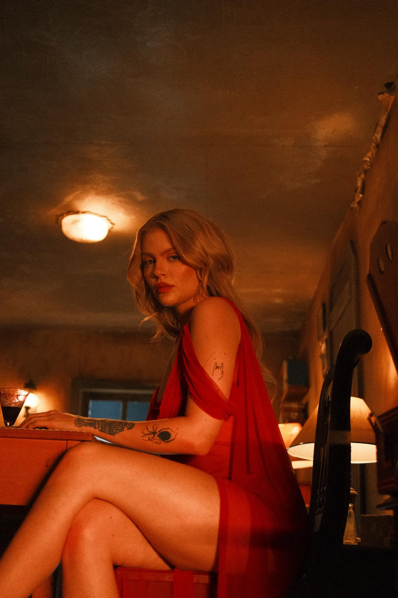
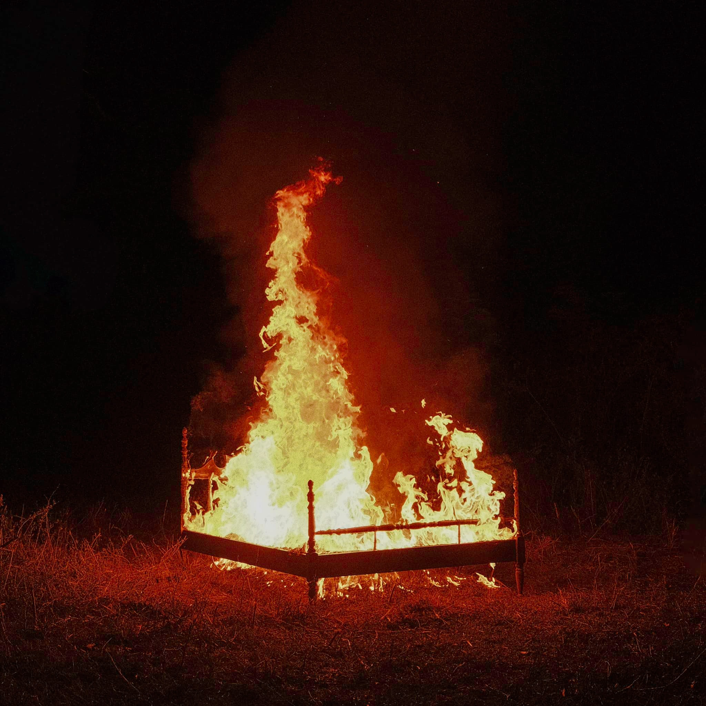
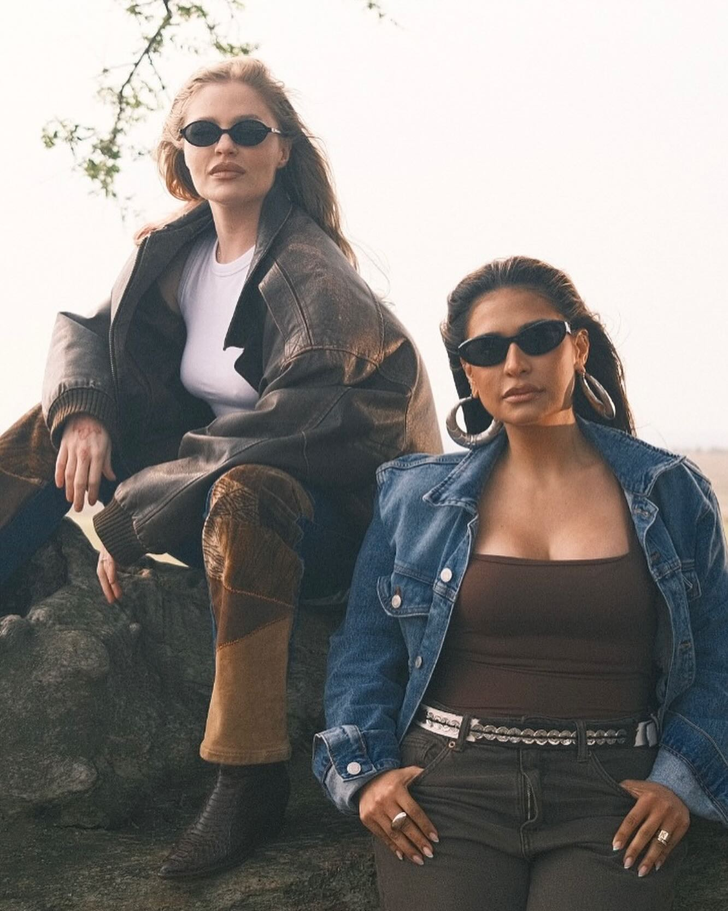
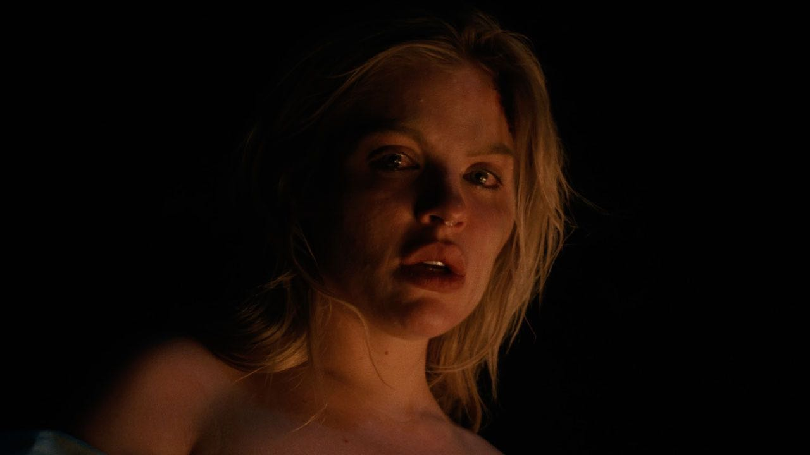
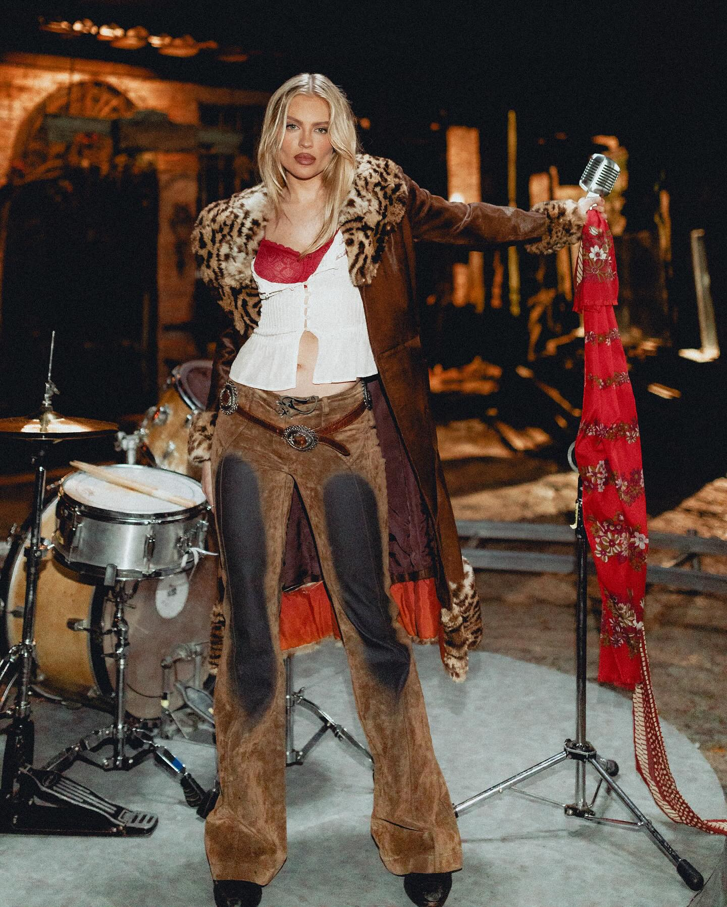
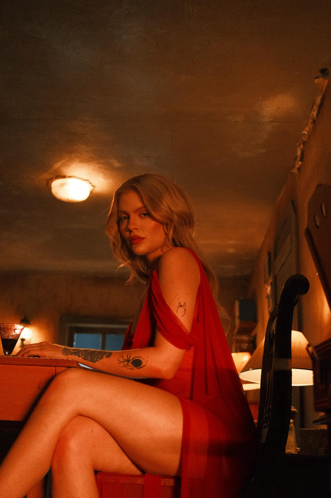
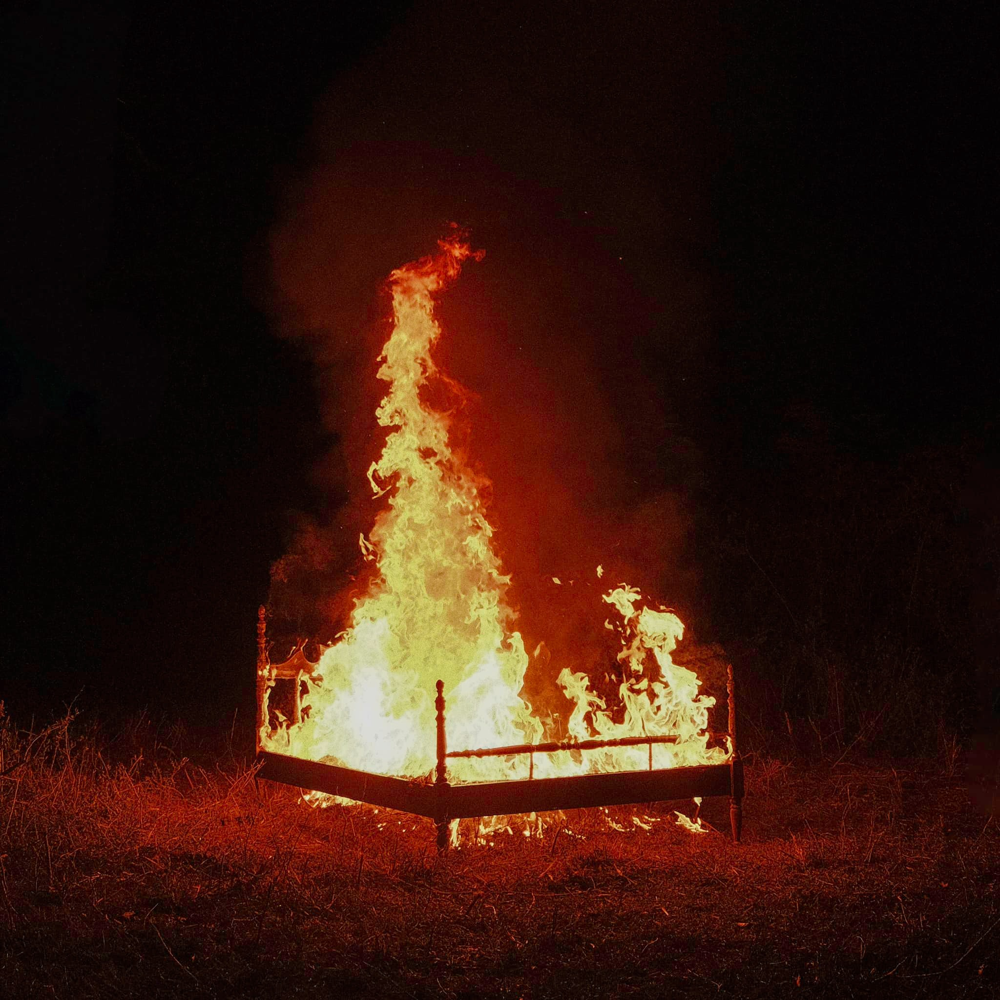
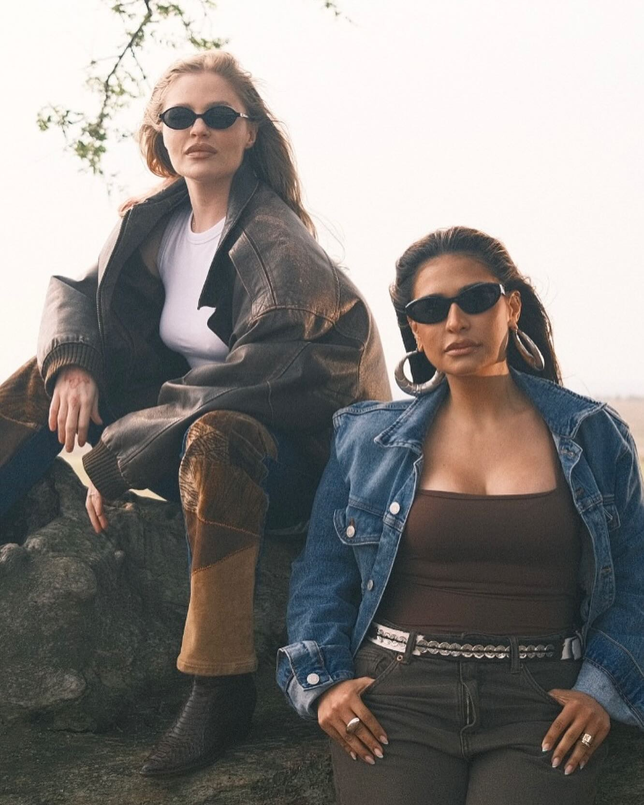
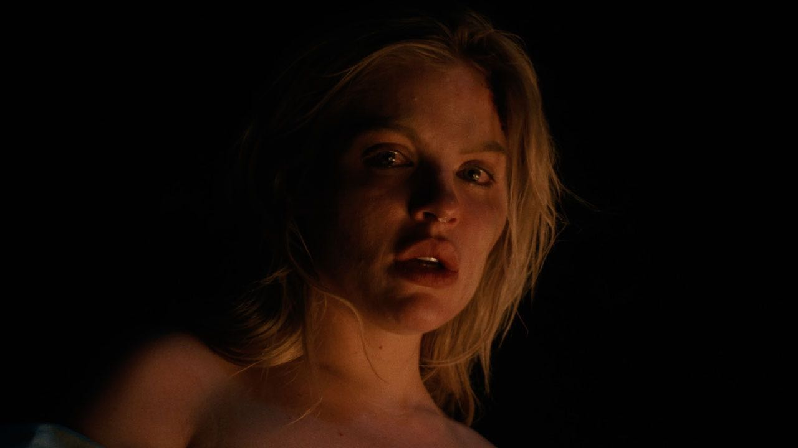
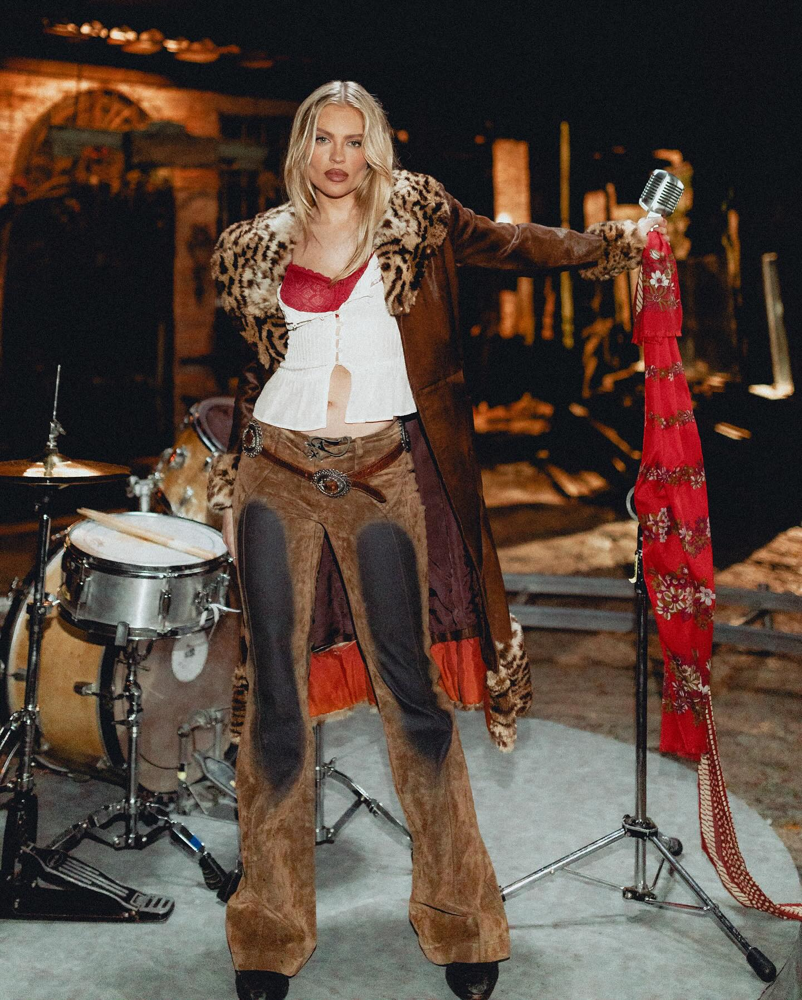

Bebada Favorita
A música "Bebada Favorita" fala sobre as experiências intensas e as emoções vividas em um relacionamento, abordando a ideia de aproveitar os momentos de felicidade.
Fechar
 









A música "Bebada Favorita" fala sobre as experiências intensas e as emoções vividas em um relacionamento, abordando a ideia de aproveitar os momentos de felicidade.
Fechar
A música "Campo de Morango" explora temas de amor e natureza, com metáforas sobre momentos doces e a liberdade no relacionamento.
Fechar
A música "Chico" reflete sobre a intensidade das emoções e os desafios enfrentados no amor.
FecharA canção fala sobre a auto-reflexão e as mensagens que deixamos para nós mesmos durante as relações.
FecharA música explora a dualidade entre o sagrado e o profano nas relações amorosas.
FecharReflete sobre as dúvidas e os desafios enfrentados em um relacionamento que não deu certo.
FecharFala sobre a dor e a vulnerabilidade que vêm com o término de um relacionamento.
FecharA música explora os altos e baixos do amor e como eles fazem parte da experiência de amar.
Fechar